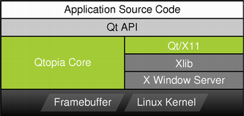

| Home · All Classes · Main Classes · Grouped Classes · Modules · Functions |
The Qtopia Core platform is a C++ framework for GUI and application development for embedded devices. It runs on a variety of processors, usually with Embedded Linux. Qtopia Core provides the standard Qt API for embedded devices with a lightweight windowing system.
| Development | Reference | Optimization |
|---|---|---|
In addition to the class library, Qtopia Core provides means for customizing and optimizing the final result: Memory consumption can be fine-tuned by compiling out features that are not used, and a number of options are available that reduce the memory and CPU requirements by making various trade-offs. Keyboard and pointer drivers can be specified, as weel as the font output's format. It is also possible to make use of accelerated graphics hardware.
| Qtopia Core versus Qt/X11 on Embedded Linux Qtopia Core applications write directly to the framebuffer, eliminating the need for the X Window System and saving memory. For development and debugging purposes, the Qtopia Core platform provides a virtual framebuffer. It also provides the option of running an application using the VNC protocol. |  |
| The Linux Framebuffer The framebuffer is enabled by default on all modern Linux distributions. For information on older versions, see http://en.tldp.org/HOWTO/Framebuffer-HOWTO.html. See also Testing the Linux Framebuffer. |
| Copyright © 2006 Trolltech | Trademarks | Qt 4.1.4 |